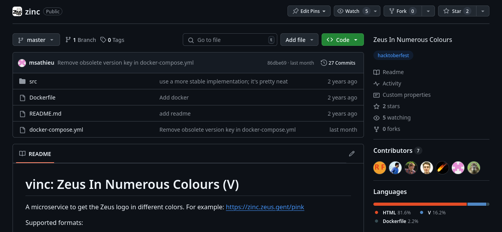

Nix & NixOS
A declarative language, build system & OS
The problem

Solution?
However, Docker is not declarative...
FROM node:latest COPY package.json ./ RUN npm install COPY --chown=node:node . . EXPOSE 8080 CMD [ "node", "app.js" ]
Solution!
Declarative
Reproducible
Reliable
In this tutorial, we shall:
- Create a package
- Create a docker container
- Create a VM
Creating the ZINC package
 github.com/zeuswpi/zinc
{ stdenv, vlang }:
stdenv.mkDerivation {
pname = "zinc";
version = "0.0.0";
src = builtins.fetchGit {
url = "https://github.com/ZeusWPI/zinc.git";
ref = "master";
rev = "86dbe69c118e81baf0aa58ade5a2c0cd85cd0efa";
};
buildInputs = [ vlang ];
buildPhase = ''
VMODULES=/tmp v src/main.v
'';
installPhase = ''
mkdir -p $out/bin
cp src/main $out/bin/zinc
'';
}
let
nixpkgs = fetchTarball "https://github.com/NixOS/nixpkgs/tarball/nixos-24.05";
pkgs = import nixpkgs { config = {}; overlays = []; };
in
{
zinc = pkgs.callPackage ./package.nix { };
}
Creating a docker container
let
nixpkgs = fetchTarball "https://github.com/NixOS/nixpkgs/tarball/nixos-24.05";
pkgs = import nixpkgs { config = {}; overlays = []; };
in rec {
zinc = pkgs.callPackage ../01-package/package.nix { };
zinc-image = pkgs.dockerTools.buildImage {
name = "zinc";
tag = "latest";
copyToRoot = pkgs.buildEnv {
name = "image-root";
paths = [ zinc ];
pathsToLink = [ "/bin" ];
};
config = {
Cmd = [ "/bin/zinc" ];
};
};
load-image = pkgs.writeShellScriptBin "load-image" ''
docker load < ${zinc-image}
'';
}
Spinning up a VM
{ lib, pkgs, ... }: {
services.sshd.enable = true;
system.stateVersion = lib.version;
users.users.root.password = "nixos";
services.openssh.settings.PermitRootLogin = lib.mkOverride 999 "yes";
services.getty.autologinUser = lib.mkOverride 999 "root";
systemd.services.zinc = let
zinc = pkgs.callPackage ../01-package/package.nix {};
in {
enable = true;
description = "Zeus in Numerous Colours";
after = [ "network.target" ];
wantedBy = [ "multi-user.target" ];
serviceConfig = {
ExecStart = "${zinc}/bin/zinc";
DynamicUser = true;
};
};
networking.firewall.allowedTCPPorts = [ 80 ];
services.nginx = {
enable = true;
recommendedProxySettings = true;
virtualHosts = {
"localhost" = {
locations."/" = {
proxyPass = "http://localhost:8081";
};
};
};
};
}